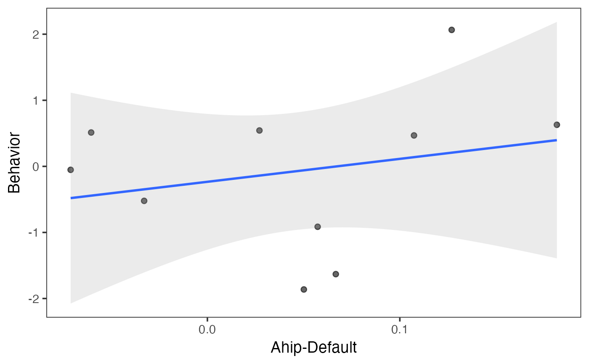
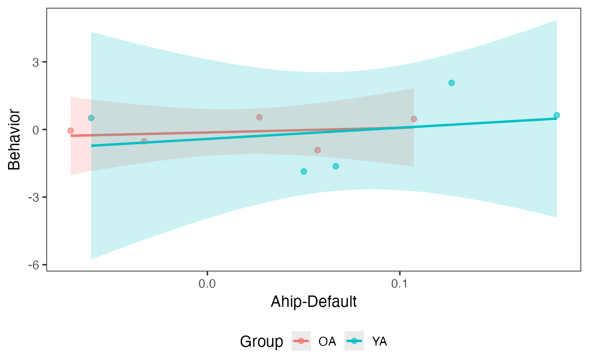

Plot connectivity-behavior scatter
plot_scatter.RdCreate scatter plots with linear regression lines for exploring connectivity-behavior relationships.
Arguments
- data
Data frame with one row per subject containing connectivity and behavioral/outcome columns
- x
Character string naming the x-axis column (typically a connectivity variable)
- y
Character string naming the y-axis column (typically a behavioral or outcome variable)
- group
Optional character string naming a grouping column. When provided, plots per-group regression lines. When NULL (default), plots a single regression line
- clean_labels
Logical. If TRUE (default), clean column names for axis display by replacing underscores with hyphens and applying title case. If FALSE, use raw column names
- title
Optional character string for the plot title
Details
Regression lines are fitted with geom_smooth(method = "lm") and
include a shaded 95 percent confidence band. When group is
provided, separate lines are fitted for each group.
Axis labels can always be overridden with + labs(x = ..., y = ...)
regardless of the clean_labels setting.
See also
plot_heatmap for connectivity matrix heatmaps.
plot_compare for group comparison bar plots.
Examples
# Ungrouped scatter
indices <- get_indices(ex_conn_array)
ahip_df <- calc_conn(ex_conn_array, indices,
from = "ahip", to = "default"
)
ahip_df$behavior <- rnorm(10)
plot_scatter(ahip_df, x = "ahip_default", y = "behavior")
#> Ignoring unknown labels:
#> • colour : "Group"
#> • fill : "Group"
#> `geom_smooth()` using formula = 'y ~ x'

# Grouped scatter
ahip_df$group <- rep(c("YA", "OA"), times = c(5, 5))
plot_scatter(ahip_df, x = "ahip_default", y = "behavior",
group = "group"
)
#> `geom_smooth()` using formula = 'y ~ x'

if (FALSE) { # \dontrun{
# Full workflow with real data
z_mat <- load_matrices("data/conn.mat", type = "zmat", exclude = c(46, 57))
indices <- get_indices(z_mat)
ahip_nets <- calc_conn(z_mat, indices,
from = "ahip", to = c("default", "cont"))
df <- cbind(ahip_nets, demo[c("group", "memory")])
plot_scatter(df, x = "ahip_default", y = "memory", group = "group",
title = "AHIP-Default Connectivity on Memory"
)
} # }